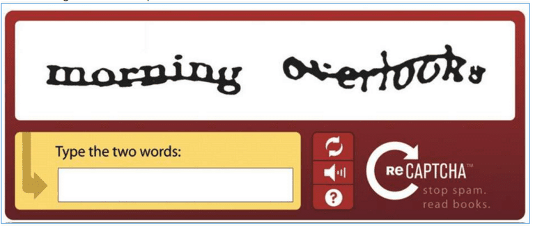

1. Move cursor clockwise around the red dot once
2. Click both cat ears
1. After how many attempts did you need to complete the test?
1
2
3
4
5
More than 5
Couldn't Solve
2. How much time did you spend in order to solve the CAPTCHA?
Less than 10 seconds
10 to 30 seconds
30 seconds to 1 min
1 to 2 min
More than 2 min
3. Would you willing to use this CAPTCHA again?
Yes
No
4. How easily could you recognise the shape(s)?
Very Easily
Easily
Not Easily
5. What was the level of ambiguity in recognising of the shapes?
1 being not ambiguous and 10 being very ambiguous
1
2
3
4
5
6
7
8
9
10
6. How do you rate the CAPTCHA in terms of difficulty?
1 being not difficult and 10 being very difficult
1
2
3
4
5
6
7
8
9
10
7. What is your opinion about the size of the shape(s) in this CAPTCHA?
Too Small
Just Right
Too Big
8. How difficult did you find the CAPTCHA application to work/interact with?
1 being not difficult and 10 being very difficult
1
2
3
4
5
6
7
8
9
10
9. Which Captcha do you prefer?

text-captcha
SSCaptcha